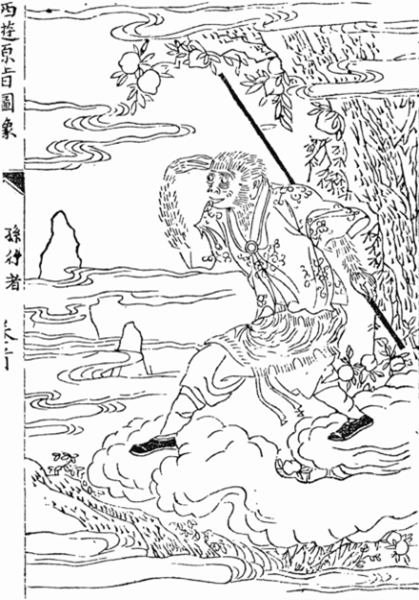

Monkey
Monkey, or Sun Wukong, is the super strong king of monkeys. Despite being king of monkeys, he does not act responsible and is a trickster. He is known for wreaking havoc on Heaven by shapeshifting into flies and venerable guests to sneak into places he should not. When sneaking is not an option, he has no trouble using his might and trusty staff to beat up any assailants. He stole peaches and drank wine he was not supposed to which made him immortal. He does eventually learn to be more respectful and act less selfishly.
He’s also a newer given how old Chinese mythology is, with his earliest story dating back to the 16th century. This has not stopped him from becoming popular, though. Chinese culture is very strict and respectful, so a trickster god who so overtly goes against the formalities of life quickly gained popularity.